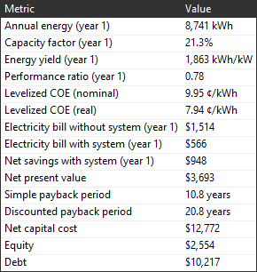
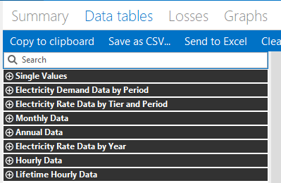
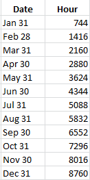

Electricity Bill Results#
The electricity bill is the residential or commercial building owner’s monthly electricity payment to the electric service provider. In order to calculate the value of the energy generated by the power system, SAM calculates the electricity bill with the system and the bill without the system. The savings is the difference between the two. SAM calculates the with and without system bill for the same electricity rate schedule as it is defined on the Electricity Rates page:
With system: The customer’s electricity bill for an electric load met by power from both the renewable energy system and grid.
Without system: The customer’s electricity bill if the entire load is met with grid power only.
Note
If you are modeling a rate switching scenario, where the electricity rate structure for the electricity bill without the system is different from the rate structure for the bill with the system, you can use the Value of RE System macro to specify two different electricity rates and calculate key metrics based on the results of two separate simulations.
Summary#

The following metrics are based on the utility bill calculations:
Electricity bill without system and Electricity bill with system in the Metrics table is the Year 1 total annual electricity bill with and without the system.
Net savings with system is the difference between the bill without system and the bill with system, and is also the value of electricity savings for Year 1 on the project cash flow.
Net present value (NPV) is the present value of the project’s annual after-tax cash flow. A positive value indicates the value of the electricity bill savings is greater than the cost of the system over the analysis period. A negative value indicates that the project costs more than it saves.
Payback period is affected by the net savings: A project with more savings will have a shorter payback period than one with less savings.
Data Tables#
Use the Data Tables tab to explore the electricity bill results.

The Data Tables tab shows data for the electricity bill with and without the system over different periods. The following tables show data used for electricity bill calculations:
- Monthly Data
The monthly data tables show the electricity bill components by month. Use these tables to see how the monthly electricity bill is calculated from the fixed, energy, and demand components, and how credits for excess generation are applied.
- Annual Data
The annual data tables show annual totals of the electricity bill components over the analysis period. You can compare these values to the annual cash flow data to see how the electricity bill affects the project cash flow.
- Electricity Rate Data By Year
The data-by-year tables are month-by-year matrices that show the electricity bill components by month over the analysis period. These tables show how credits roll over from year to year.
- Electricity Rate Data by Tier and Period
For complex electricity rates with time-of-use and tiered energy rates, these tables show energy charges for each month in Year 1 by time-of-use period and tier. Use these tables to see how time-of-use and tiered charges are calculated, and to see how credits are applied.
- Electricity Demand Data by Period
For electricity rates with time-of-use demand rates, these tables show demand charges for each month in Year 1.
- Hourly Data / Subhourly Data
The hourly/subhourly data tables shows time series data over the first year (Year 1) of the analysis period. Use this table to compare time series power data and electricity sales and purchase data for the net billing and buy all / sell all options that calculate electricity bill amounts from time series data instead of monthly totals.
Note
The Lifetime Hourly/Subhourly Data tables show data from the performance model. They do not show data from the electricity bill calculations.
Monthly Data / Electricity Rate Data by Year#
The Monthly Data list on the Data Tables tab shows monthly totals that SAM uses for electricity bill calculations.
Note
The monthly electricity bill may be negative in some situations when the value of electricity credits is more than the electricity bill. SAM treats the negative bill as savings in the project cash flow.
SAM uses the following method to calculate monthly and annual kWh totals from kW time series data:
Monthly Total (kWh) = SUM OVER MONTH( Time Series Value (kW/time step) × Time Steps per Hour (1/h) )
- Buy all sell all electricity sales to grid ($)
For the buy all / sell all metering option, the dollar value of monthly electricity sales. Set to zero for the net metering and net billing options.
- Billing demand (kW)
A value in kW representing the billable peak demand over a given period.
The billing demand may be the maximum consumption over a month, over a time-of-use period and tier within a month, or over a lookback period of more than one month.
The billing demand may equal to the actual maximum consumption over the period, or calculated as a percentage of the actual maximum consumption.
- Demand charge ($)
The demand charge component of the monthly electricity bill. The total electricity bill includes both a fixed demand charge and TOU demand charge.
The flat demand charge is calculated from the demand rates by month with optional tiers rates on the Electricity Rates page.
The TOU demand charge is calculated from the demand rates by time-of-use and/or tiers rates on the Electricity Rates page.
- Demand peak (kW)
The peak electricity usage for each month, which is the monthly maximum of the electricity from grid time series data (equivalent to the minimum of electricity to/from grid).
- Electricity bill ($)
The total monthly electricity bill, calculated as the sum of the fixed, energy, and demand charges less any credits. The monthly electricity bill may be negative for some billing options in months when dollar credits exceed the monthly bill.
- Electricity load ($)
The total electric load for each month, the sum of the time series electricity load data over the month.
- Electricity to/from grid (kWh)
The total net electricity delivered to the grid over the month. A negative value indicates electricity delivered by the grid. This is the sum of the time series electricity to/from grid data.
- Electricity use with system (kWh)
The total net electricity delivered by the grid over the month. Each month’s value is equal to the negative of electricity to/from grid.
- Energy charge with system ($)
The energy charge portion of the electricity bill, calculated from the rates for energy charges on the Electricity Rates page.
- Energy charge with system before credits ($)
The energy charge portion of the electricity bill without dollar credits for excess generation for metering options with a sell rate. For all billing options except net energy metering, compare this value to the energy charge to see how credits affect the bill.
- Excess generation (kWh)
The total monthly electricity generated by the power system in excess of the load for months when total generation is greater than the load. For months when total generation is less than the load, excess generation is zero. Excess generation is total monthly energy (AC energy for PV systems) minus the total monthly electricity load.
For net energy metering and net energy metering with $ credits, this is the value used to determine the value of net metering credits.
For the net billing options, the excess generation is calculated for each hourly or subhourly time step.
- Fixed monthly charge ($)
The fixed charge component of the electricity bill, determined by the fixed monthly charge on the Electricity Rates page.
- Minimum charge ($)
When the monthly minimum charge on the Electricity Rates page is greater than zero, if the sum of the monthly fixed, energy, and demand charges less any credits is less than the minimum, the monthly bill is set to the monthly minimum charge.
The annual minimum charge on the Electricity Rates page does not affect the monthly minimum charge, but does affect the total annual electricity bill. When the sum of monthly fixed, energy, and demand charges less any credits is less than the minimum annual charge, the annual bill is set to the annual minimum charge. You can see the annual electricity bill and minimum charge on the Annual Data variables.
- Monthly energy / AC energy (kWh)
Total AC electricity generated by the power system, including electricity discharged by the battery if the system includes storage. This is the sum of the time series system power generated data.
- Net annual true-up payments ($)
For the net metering and net billing metering options with annual true-up payments, the amount of the payment in the month that it occurs.
- Net billing credit ($)
For net billing and net billing with carryover to next month, the value of credits for excess generation credited in dollars to the current month’s electricity bill.
For net billing with carryover to next month, the month at the end of the true-up period includes any net excess compensation.
When the total net billing credit amount is greater than the total monthly bill, the billing credit is treated as a cash payment to the electricity customer, which results in a negative monthly bill.
- Net metering credit ($)
For net energy metering with $ credits, the value of credits for excess generation credit in dollars to the current month’s electricity bill. For the month at the end of the true-up period, the net billing credit includes any net excess compensation.
- Net metering cumulative kWh credit earned for annual true-up (kWh)
For net energy metering, SAM applies the cumulative credit in the true-up month to the electricity bill for that month at the compensation rate for net excess generation. If the credit amount is greater than the monthly bill, the monthly bill is negative.
The net excess generation for annual true-up accumulates on a monthly basis regardless of time-of-use (TOU) periods.
Excess generation credits for monthly rollovers are allocated based the (TOU) schedule. To see how net metering credits accrue on a monthly basis, use the Electricity Rate Data by Tier and Period table to compare the electricity exports with system and electricity usage with system for each month.
Hourly / n Minute Data#
The Hourly or n Minute Data list depends on the simulation time step. For hourly simulations, SAM displays an Hourly Data list. For subhourly simulations, it displays the simulation time step. For example, for 15-minute simulations it displays a 15 Minute Data list.
In time series results (hourly or subhourly), some electricity bill values are in the last hour of each month:

- Bill load (kWh)
The load values used for energy charge and credit calculations. These values are converted to kilowatt-hour (kWh) from the electricity load data kilowatt (kW) values:
Bill Load (kWh) = Electricity Load (kW) × Simulation Time Stem (minutes) ÷ 60 minutes
- Demand charge with system ($)
The demand charge amount, shown in the last hour of the month.
- Electricity from grid (kWh)
Electricity delivered by the grid for energy charge calculations.
- Electricity from system to load (kWh)
Electricity delivered by the system for energy charge and excess generation calculations.
- Electricity load (year 1) (kW)
The electric load data in kW as entered on the Electric Load page.
- Electricity peak from grid per TOU period (kW)
The peak load for the month for each TOU period. Use these values to see when the peaks occur in the month. (This may be easier to see on the Time Series or Heat Map tab.)
- Electricity peak from system to load (kW)
No explanation available. Not used in calculations.
- Electricity sales/purchases with system ($)
Sales (positive) and purchases (negative) of electricity to and from the grid for net billing and buy all / sell all metering.
- Electricity sales/purchases without system ($)
Purchases (negative) to meet the load without the system.
- Electricity to grid (kWh)
Electricity delivered to the grid for energy charge and credit calculations. These are the positive values of electricity to / from grid.
- Electricity to/from grid (kWh)
Electricity delivered to the grid (positive) or delivered by the grid (negative) for energy charge and credit calculations.
- Electricity to/from grid peak (kW)
The peak power delivered to the grid (positive) or delivered by the grid (negative) for demand charge calculations.
- Energy charge with system ($)
The cost of electricity for net billing and buy all / sell all. The monthly energy charge is the sum of these dollar values for each month.
For net energy metering, SAM calculates the energy charge portion of electricity bill from monthly total values of time series electricity values. These time series energy charge with system values are a representation of the energy charge on a time step basis required for Levelized Cost of Storage calculations. A positive value for a given time step indicates that the time step contributed to the monthly energy charge. A negative value indicates that the time step contributed to net metering credits. The sum of the time series Energy charge with system for a given month is equal to the monthly Energy charges before credits for that month.
- Energy charge without system ($)
The cost of electricity for net billing and buy all / sell all to meet the load without the system.
- TOU period for demand charges
The time-of-use period number, between 1 and 9 for each time step as defined by the demand rate schedule on the Electricity Rates page.
- TOU period for energy charges
The time-of-use period number, between 1 and 9 for each time step as defined by the energy rate schedule on the Electricity Rates page.
Electricity Rate Data by Tier and Period#
The Electricity Rate Data by Tier and Period list shows data used to calculate the energy charge portion of the electricity bill for each month when the rate structure includes time-of-use (TOU) periods and/or tiers.
- Electricity exports with system MMM (kWh)
The kWh in each time-of-use period treated as exports to the grid for electricity bill calculation purposes.
For the net energy metering option, this value includes any kWh credits rolled over from the TOU period in the previous month, so the total electricity exports in a given month could be greater than the actual excess generation reported under Monthly Data.
- Electricity usage with system MMM (kWh)
The kWh in each time-of-use period treated as imports from the grid for electricity bill calculation purposes. The electricity usage is the total load in a given time-of-use period minus the total generation in that time-of-use period.
- Energy charge with system MMM ($)
The cost in dollars of electricity imports by time-of-use period and tier accounting for any for any excess generation credits or payments.
Electricity Demand Data by Period#
The Electricity Demand Data by period list shows data used to calculate demand charge portion of the electricity bill for each month when the rate structure includes demand charges.
- Demand peak charge ($)
The portion of the demand charge assessed for each time-of-use period in each month. The total demand charge for each month is the sum of demand charges by time-of-use period.
- Demand peak (kW)
The peak demand value that SAM uses to calculate the demand charge for each time-of-use period by month. For demand rates with time-of-use periods, SAM calculates the billing demand for each time-of-use period.
If billing demand lookback is enabled on the Electricity Rates page, the billing demand for a given time-of-use period or tier may be different than the actual maximum consumption depending on the lookback parameters on the Electricity Rates page.